Gaming chairs 25 items · 2,485 pcs

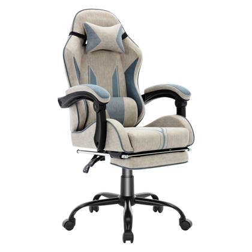
Product photoTap to zoomGaming chair with footrest
GC006-GREY · 办公椅/OFFICE CHAIR
Model GC006, colour grey
Est. weight ≈ 16–21 t
867 pcsRef #1

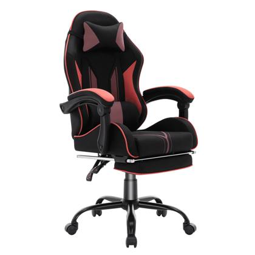
Product photoTap to zoomGaming chair with footrest
GC006-BLACK · 办公椅/OFFICE CHAIR
Model GC006, colour black
Est. weight ≈ 6.0–7.6 t
315 pcsRef #2

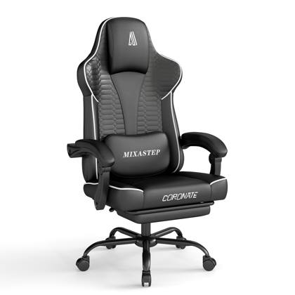
Product photoTap to zoomGaming chair with footrest
GC008-WHITE · 电竞椅/gaming chair
Model GC008, colour white
Est. weight ≈ 5.3–6.6 t
277 pcsRef #12

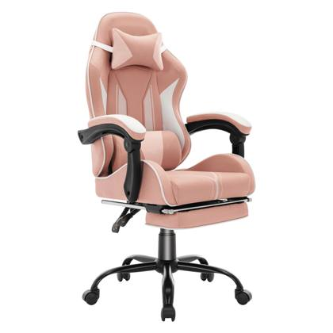
Product photoTap to zoomGaming chair with footrest
GC006-PINK · 办公椅/OFFICE CHAIR
Model GC006, colour pink
Est. weight ≈ 4.8–6.0 t
250 pcsRef #3

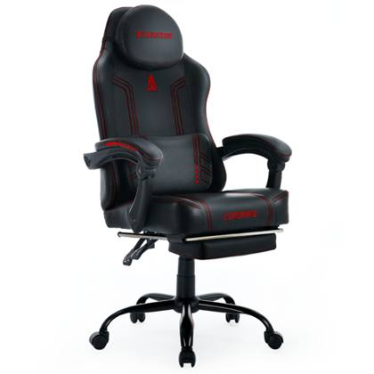
Product photoTap to zoomGaming chair with footrest
GC005-RED · 办公椅/OFFICE CHAIR
Model GC005, colour red
Est. weight ≈ 2.0–2.5 t
106 pcsRef #37

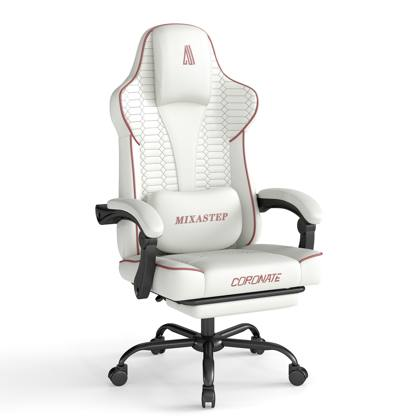
Product photoTap to zoomGaming chair with footrest
GC008-RED · 电竞椅/gaming chair
Model GC008, colour red
Est. weight ≈ 1.8–2.2 t
93 pcsRef #11

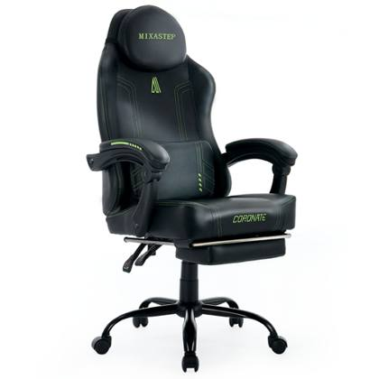
Product photoTap to zoomGaming chair with footrest
GC005-GREEN · 办公椅/OFFICE CHAIR
Model GC005, colour green
Est. weight ≈ 1.7–2.2 t
90 pcsRef #35

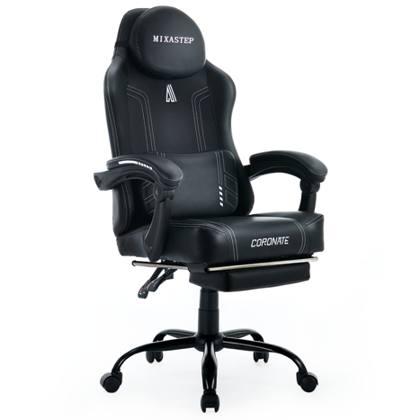
Photo shows the black versionTap to zoomGaming chair with footrest
GC005-WHITE · 办公椅/OFFICE CHAIR
Model GC005, colour white
Est. weight ≈ 1.7–2.2 t
90 pcsRef #38

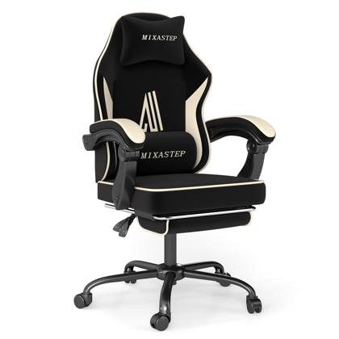
Product photoTap to zoomGaming chair with footrest
GC006PRO-BLACK · 电竞椅/gaming chair
Model GC006PRO, colour black
Est. weight ≈ 1.6–2.1 t
86 pcsRef #5

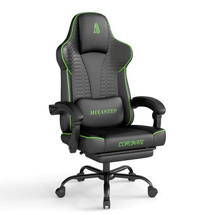
Product photoTap to zoomGaming chair with footrest
GC008-GREEN · 电竞椅/gaming chair
Model GC008, colour green
Est. weight ≈ 1.0–1.2 t
52 pcsRef #10

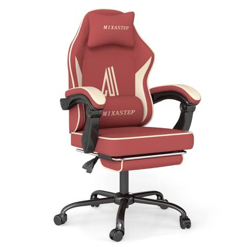
Product photoTap to zoomGaming chair with footrest
GC006PRO-RED · 电竞椅/gaming chair
Model GC006PRO, colour red
Est. weight ≈ 0.8–1.0 t
40 pcsRef #7

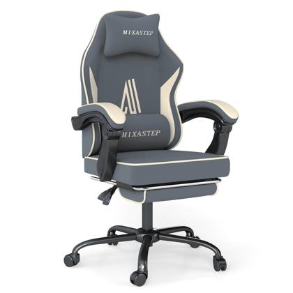
Product photoTap to zoomGaming chair with footrest
GC006PRO-LIGHT BLUE · 电竞椅/gaming chair
Model GC006PRO, colour light blue
Est. weight ≈ 0.7–0.9 t
39 pcsRef #4

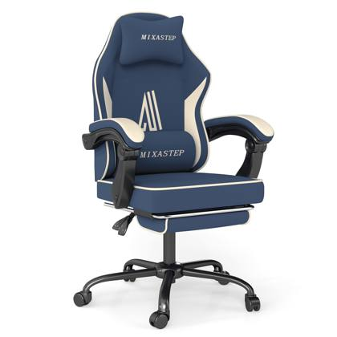
Product photoTap to zoomGaming chair with footrest
GC006PRO-DARK BLUE · 电竞椅/gaming chair
Model GC006PRO, colour dark blue
Est. weight ≈ 0.7–0.9 t
36 pcsRef #6

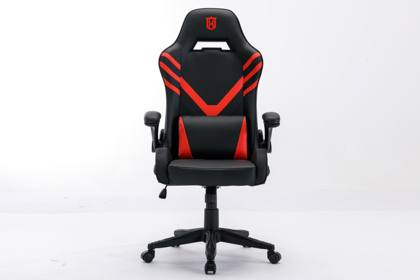
Product photoTap to zoomGaming chair
GC003-RED · 电竞椅/gaming chair
Model GC003, colour red
Est. weight ≈ 0.5–0.6 t
29 pcsRef #23

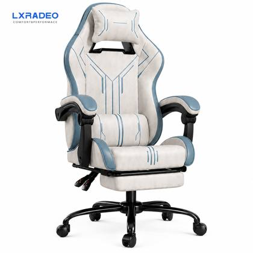
Product photoTap to zoomGaming chair with footrest
GC006MAX-GREY · 办公椅/office chair
Model GC006MAX, colour grey
Est. weight ≈ 0.4–0.5 t
19 pcsRef #8

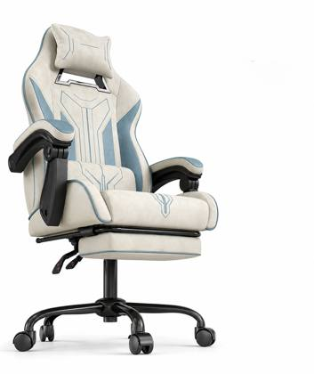
Product photoTap to zoomGaming chair with footrest
GC006AMG-GREY · 办公椅/office chair
Model GC006AMG, colour grey
Est. weight ≈ 0.3–0.4 t
18 pcsRef #9

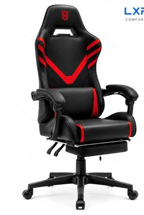
Product photoTap to zoomGaming chair with footrest
GC004-RED · 电竞椅/gaming chair
Model GC004, colour red
Est. weight ≈ 0.3–0.4 t
15 pcsRef #28

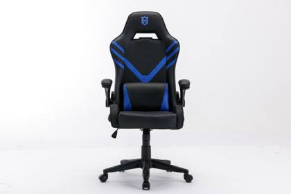
Product photoTap to zoomGaming chair
GC003-BLUE · 电竞椅/gaming chair
Model GC003, colour blue
Est. weight ≈ 0.1–0.2 t
9 pcsRef #24

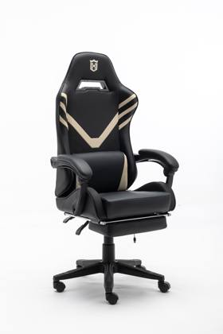
Product photoTap to zoomGaming chair with footrest
GC004-BELGE · 电竞椅/gaming chair
Model GC004, colour beige
Est. weight ≈ 0.2 t
9 pcsRef #26

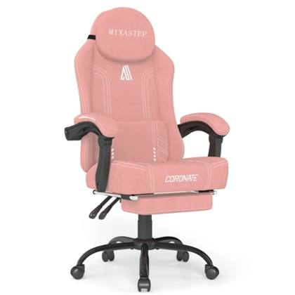
Product photoTap to zoomGaming chair with footrest
GC005-PINK · 电竞椅/gaming chair
Model GC005, colour pink
Est. weight ≈ 0.2 t
9 pcsRef #36

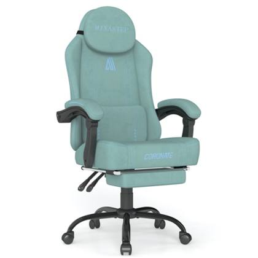
Product photoTap to zoomGaming chair with footrest
GC005-BLUE · 电竞椅/gaming chair
Model GC005, colour blue
Est. weight ≈ 0.2 t
9 pcsRef #39

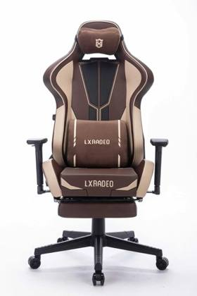
Product photoTap to zoomGaming chair with footrest
DE-GC002-PAN · 电竞椅/gaming chair
Model GC002, colour brown/beige (per photo)
Est. weight ≈ 0.2 t
9 pcsRef #42

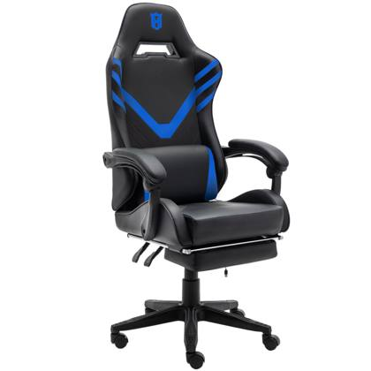
Product photoTap to zoomGaming chair with footrest
GC004-BLUE · 电竞椅/gaming chair
Model GC004, colour blue
Est. weight ≈ 0.2 t
8 pcsRef #27

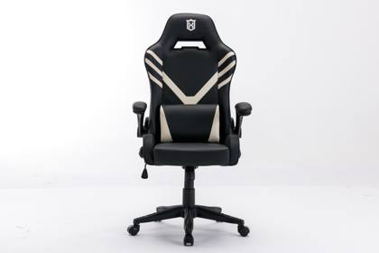
Product photoTap to zoomGaming chair
GC003-BEIGE · 电竞椅/gaming chair
Model GC003, colour beige
Est. weight ≈ 0.1 t
5 pcsRef #25

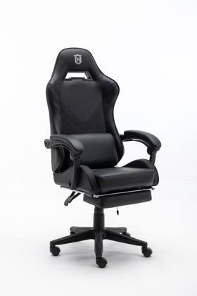
Product photoTap to zoomGaming chair with footrest
GC004-BLACK · 电竞椅/gaming chair
Model GC004, colour black
Est. weight ≈ 0.1 t
5 pcsRef #29
Office & executive chairs 14 items · 273 pcs

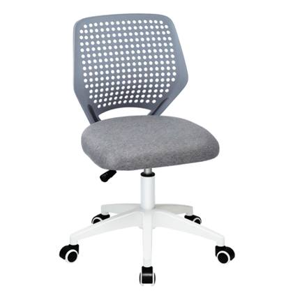
Product photoTap to zoomTask chair, mesh back
OC015-GREY · 办公椅/OFFICE CHAIR
Model OC015, colour grey
Est. weight ≈ 0.5–0.7 t
66 pcsRef #34

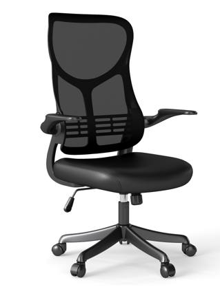
Product photoTap to zoomErgonomic mesh office chair
WY001-BLACK · 办公椅/office chair
Model WY001, colour black
Est. weight ≈ 0.7–0.9 t
58 pcsRef #13

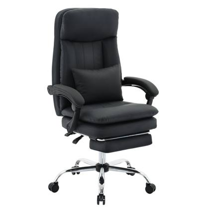
Product photoTap to zoomExecutive chair with footrest
OC002-BLACK · 办公椅/OFFICE CHAIR
Model OC002, colour black
Est. weight ≈ 0.7–0.9 t
40 pcsRef #22

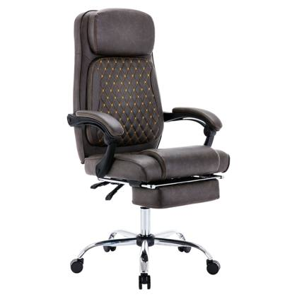
Product photoTap to zoomExecutive chair with footrest
OC001-BROWN · 办公椅/OFFICE CHAIR
Model OC001, colour brown
Est. weight ≈ 0.4–0.6 t
25 pcsRef #20

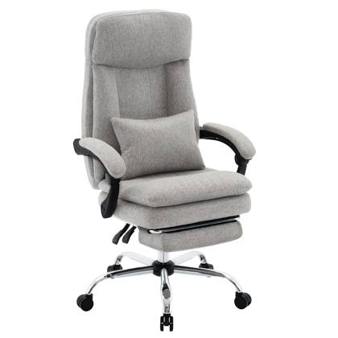
Product photoTap to zoomExecutive chair with footrest
OC002-GREY · 办公椅/OFFICE CHAIR
Model OC002, colour grey
Est. weight ≈ 0.3–0.4 t
17 pcsRef #21

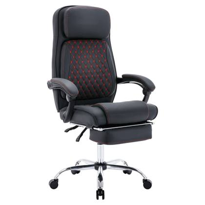
Product photoTap to zoomExecutive chair with footrest
OC001-BLACK · 办公椅/OFFICE CHAIR
Model OC001, colour black
Est. weight ≈ 0.2 t
11 pcsRef #18

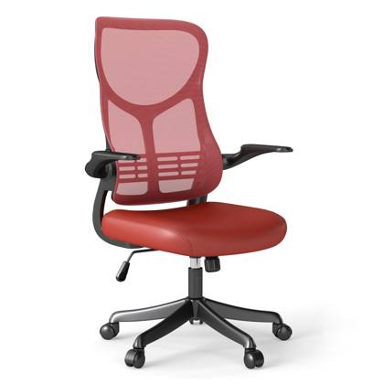
Product photoTap to zoomErgonomic mesh office chair
WY001-RED · 办公椅/office chair
Model WY001, colour red
Est. weight ≈ 0.1 t
10 pcsRef #15

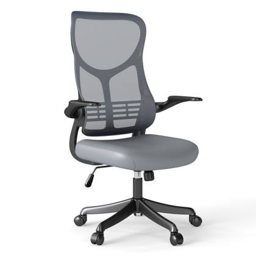
Product photoTap to zoomErgonomic mesh office chair
WY001-GREY · 办公椅/office chair
Model WY001, colour grey
Est. weight ≈ 0.1 t
10 pcsRef #16

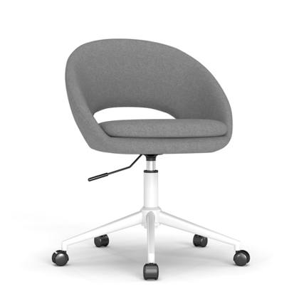
Product photoTap to zoomSwivel desk chair, low back
LC001-GREY · 办公椅/office chair
Model LC001, colour grey
Est. weight ≈ 0.1 t
9 pcsRef #33

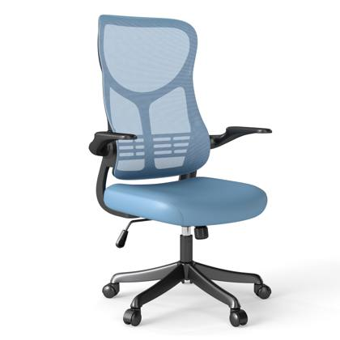
Product photoTap to zoomErgonomic mesh office chair
WY001-BLUE · 办公椅/office chair
Model WY001, colour blue
Est. weight ≈ 0.1 t
8 pcsRef #14

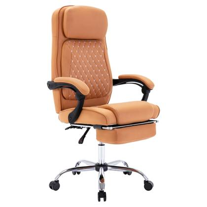
Product photoTap to zoomExecutive chair with footrest
OC001-YELLOW · 办公椅/OFFICE CHAIR
Model OC001, colour yellow
Est. weight ≈ 0.1–0.2 t
8 pcsRef #19

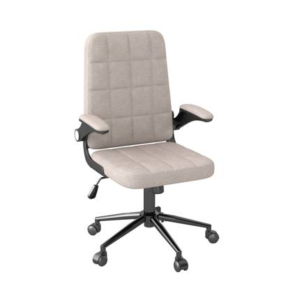
Product photoTap to zoomUpholstered office chair
OC007-BEIGE · 办公椅/office chair
Model OC007, colour beige
Est. weight ≈ 0.1 t
6 pcsRef #17

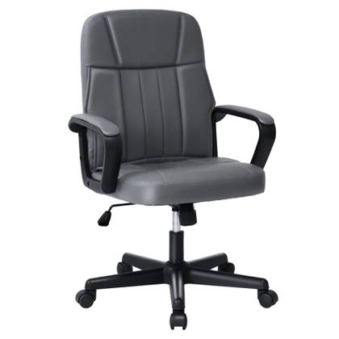
Product photoTap to zoomOffice chair, mid-back
OC013-GREY · 办公椅/OFFICE CHAIR
Model OC013, colour grey
Est. weight ≈ 0.0 t
3 pcsRef #40

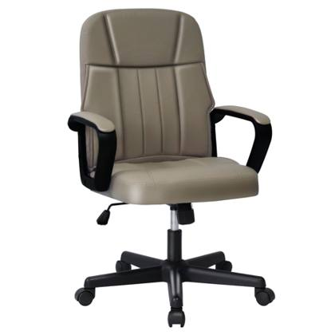
Product photoTap to zoomOffice chair, mid-back
OC013-CHAMPANGE · 办公椅/OFFICE CHAIR
Model OC013, colour champagne
Est. weight ≈ 0.0 t
2 pcsRef #41
Gaming desks & drawer cabinets 3 items · 31 pcs

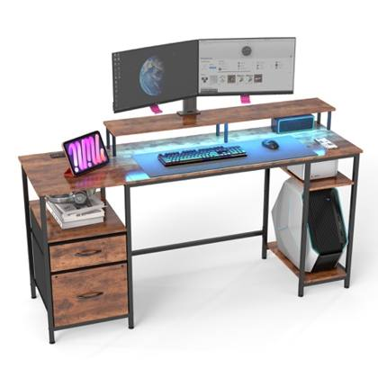
Product photoTap to zoomGaming desk with drawers
OD001-YELLOW · 电竞桌/gaming desk
Model OD001, colour yellow
Est. weight ≈ 0.6–0.8 t
24 pcsRef #31

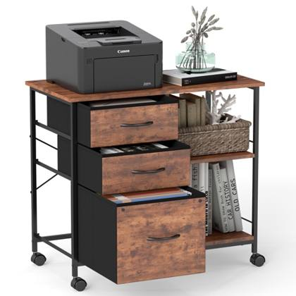
Product photoTap to zoomRolling drawer cabinet
OD002-YELLOW · 电竞桌/gaming desk
Listed by the seller as a gaming desk (OD002); the seller's photo shows a rolling drawer cabinet
Est. weight ≈ 0.1 t
6 pcsRef #32

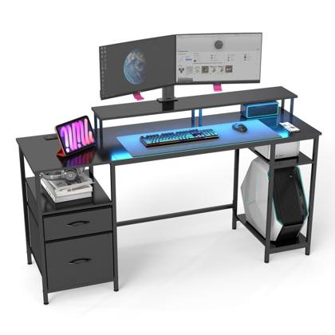
Product photoTap to zoomGaming desk with drawers
OD001-BLACK · 电竞桌/gaming desk
Model OD001, colour black
Est. weight ≈ 0.0 t
1 pcsRef #30
Spare parts 24 items · 147 pcs
| Ref | Item | Type | Qty | Est. weight |
|---|---|---|---|---|
| Ref #44 | GC006-SCREWPACK · 螺丝包/Screwpack | Screw pack | 26 | ≈ 0.0–0.1 t |
| Ref #43 | GC006-T · T型背杆/T-shaped back bar | T-shaped back bar | 15 | ≈ 0.0 t |
| Ref #45 | GC006-WHEEL · 脚轮/WHEEL | Caster wheels | 10 | ≈ 0.0 t |
| Ref #59 | DE-THREE-SECTIONSET · 三节套/Three-section set | Three-section cover set | 10 | ≈ 0.0 t |
| Ref #64 | DE-GC003WHEEL · 脚轮/wheel | Caster wheels | 9 | ≈ 0.0 t |
| Ref #48 | DE-GC003-TRAY · 托盘/tray | Seat plate (tray) | 5 | ≈ 0.0 t |
| Ref #49 | DE-GC002-TRAY · 托盘/tray | Seat plate (tray) | 5 | ≈ 0.0 t |
| Ref #51 | DE-GC004-ARMREST-LEFT · 扶手-左/armrest-left | Armrest, left | 5 | ≈ 0.0 t |
| Ref #52 | DE-GC003-ARMREST-LEFT · 扶手-左/armrest-left | Armrest, left | 5 | ≈ 0.0 t |
| Ref #58 | DE-GC001-SCREWPACK · 螺丝包/Screwpack | Screw pack | 5 | ≈ 0.0 t |
| Ref #60 | DE-GC004-ARMREST · 扶手/armrest | Armrest | 5 | ≈ 0.0 t |
| Ref #61 | DE-GC003-ARMREST · 扶手/armrest | Armrest | 5 | ≈ 0.0 t |
| Ref #65 | DE-GC002WHEEL · 脚轮/wheel | Caster wheels | 5 | ≈ 0.0 t |
| Ref #66 | DE-GC001WHEEL · 脚轮/wheel | Caster wheels | 5 | ≈ 0.0 t |
| Ref #46 | DE-GC002-DISASSEMBLYFOOT · 拆装脚/disassemblyfoot | Detachable foot | 4 | ≈ 0.0 t |
| Ref #47 | DE-GC004-TRAY · 托盘/tray | Seat plate (tray) | 4 | ≈ 0.0 t |
| Ref #56 | DE-GC003-SCREWPACK · 螺丝包/Screwpack | Screw pack | 4 | ≈ 0.0 t |
| Ref #50 | DE-GC002-FIVE-STARFEET · 五星脚/Five-starfeet | Five-star base | 3 | ≈ 0.0 t |
| Ref #53 | DE-GC002CYAN-ARMREST-LEFT · 扶手-左/armrest-left | Armrest, left | 3 | ≈ 0.0 t |
| Ref #54 | DE-GC002MF-ARMREST-LEFT · 扶手-左/armrest-left | Armrest, left | 3 | ≈ 0.0 t |
| Ref #55 | DE-GC004-SCREWPACK · 螺丝包/Screwpack | Screw pack | 3 | ≈ 0.0 t |
| Ref #62 | DE-GC002-CYAN-ARMREST · 扶手/armrest | Armrest | 3 | ≈ 0.0 t |
| Ref #63 | DE-GC002-MF-ARMREST · 扶手/armrest | Armrest | 3 | ≈ 0.0 t |
| Ref #57 | DE-GC002-SCREWPACK · 螺丝包/Screwpack | Screw pack | 2 | ≈ 0.0 t |
Summary of contents
By product type
| Product type | Items | Quantity (pcs) | Share | Est. weight |
|---|---|---|---|---|
| Gaming chair with footrest | 22 | 2,442 | 83.2% | ≈ 46–59 t |
| Executive chair with footrest | 5 | 101 | 3.4% | ≈ 1.7–2.2 t |
| Ergonomic mesh office chair | 4 | 86 | 2.9% | ≈ 1.0–1.3 t |
| Task chair, mesh back | 1 | 66 | 2.2% | ≈ 0.5–0.7 t |
| Gaming chair | 3 | 43 | 1.5% | ≈ 0.7–0.9 t |
| Screw pack | 5 | 40 | 1.4% | ≈ 0.0–0.1 t |
| Caster wheels | 4 | 29 | 1.0% | ≈ 0.0–0.1 t |
| Gaming desk with drawers | 2 | 25 | 0.9% | ≈ 0.6–0.8 t |
| Armrest, left | 4 | 16 | 0.5% | ≈ 0.0 t |
| Armrest | 4 | 16 | 0.5% | ≈ 0.0 t |
| T-shaped back bar | 1 | 15 | 0.5% | ≈ 0.0 t |
| Seat plate (tray) | 3 | 14 | 0.5% | ≈ 0.0 t |
| Three-section cover set | 1 | 10 | 0.3% | ≈ 0.0 t |
| Swivel desk chair, low back | 1 | 9 | 0.3% | ≈ 0.1 t |
| Upholstered office chair | 1 | 6 | 0.2% | ≈ 0.1 t |
| Rolling drawer cabinet | 1 | 6 | 0.2% | ≈ 0.1 t |
| Office chair, mid-back | 2 | 5 | 0.2% | ≈ 0.1 t |
| Detachable foot | 1 | 4 | 0.1% | ≈ 0.0 t |
| Five-star base | 1 | 3 | 0.1% | ≈ 0.0 t |
| Total | 66 | 2,936 | 100% | ≈ 51–65 t |
By category
| Category | Items | Quantity (pcs) | Share | Est. weight |
|---|---|---|---|---|
| Gaming chairs | 25 | 2,485 | 84.6% | ≈ 47–59 t |
| Office & executive chairs | 14 | 273 | 9.3% | ≈ 3.4–4.4 t |
| Gaming desks & drawer cabinets | 3 | 31 | 1.1% | ≈ 0.7–0.9 t |
| Spare parts | 24 | 147 | 5.0% | ≈ 0.0–0.4 t |
| Total | 66 | 2,936 | 100% | ≈ 51–65 t |
Shipping estimate
| Total volume (approx.) | ≈ 455–565 m³ |
| Total weight (approx.) | ≈ 51–65 t |
| 40′ High Cube containers | 7–9 |
Estimate: the list gives no carton sizes or weights. Typical flat-pack cartons were assumed per chair type (gaming chair with footrest ≈ 0.17–0.21 m³ / 19–24 kg, mesh office chair ≈ 0.10–0.13 m³ / 12–15 kg, small task chairs ≈ 0.07–0.10 m³). Chairs are bulky rather than heavy, so volume decides the container count.
Container capacity used: 40′ HC ≈ 68 m³ / 26.5 t, 20′ ≈ 28 m³ / 24 t (practical loading).
Container capacity used: 40′ HC ≈ 68 m³ / 26.5 t, 20′ ≈ 28 m³ / 24 t (practical loading).